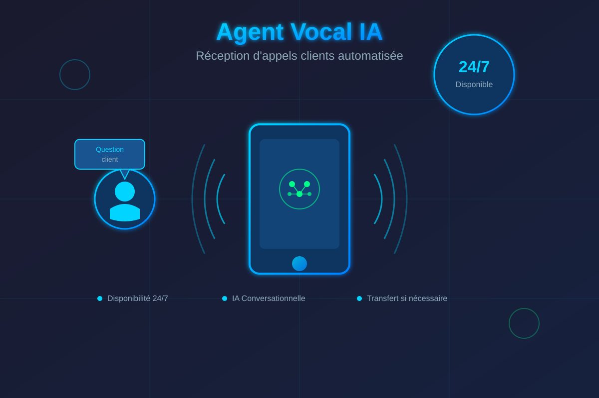

BTP & Construction
Extraction de surfaces et de métrés sur plans, chiffrage d'appels d'offres, estimation de matériaux.
Quatre familles de solutions, un seul principe : automatiser ce qui vous coûte du temps. Chaque outil est conçu sur-mesure, à partir de vos processus réels.
Quand aucun logiciel du marché ne répond vraiment à votre besoin, nous construisons l'outil exact, interface, logique métier et IA intégrée.

Plans, PDF, contrats, fichiers techniques : l'IA lit, comprend et structure l'information que vos équipes saisissaient à la main.

Un agent vocal qui répond au téléphone, un assistant qui qualifie vos demandes, des chaînes d'automatisation qui tournent 24/7, sans jamais souffler.

Nous adaptons l'IA aux exigences propres de chaque secteur, y compris les plus réglementés.
Extraction de surfaces et de métrés sur plans, chiffrage d'appels d'offres, estimation de matériaux.
Gestion de dossiers, comptes-rendus automatisés, outils respectueux de la confidentialité patient.
Assistants pédagogiques, synthèse de supports, outils conformes pour les établissements.
Traitement automatisé des demandes, gestion intelligente des dossiers citoyens, portails dédiés.
De l'artisan au grand groupe : automatisation commerciale, devis et factures, agents d'accueil. L'IA s'adapte à votre structure, quelle que soit votre taille, avec l'agilité d'une équipe réactive.
Votre métier n'est pas listé ? C'est justement notre spécialité : comprendre un domaine et créer l'outil qui manque.
Décrivez-la nous. On vous dit en 30 minutes si l'IA peut la prendre en charge.